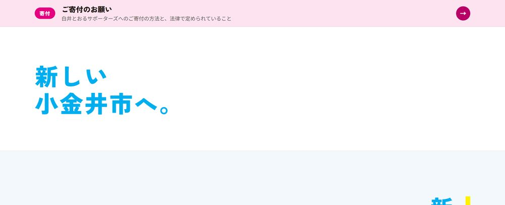
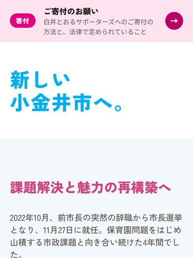
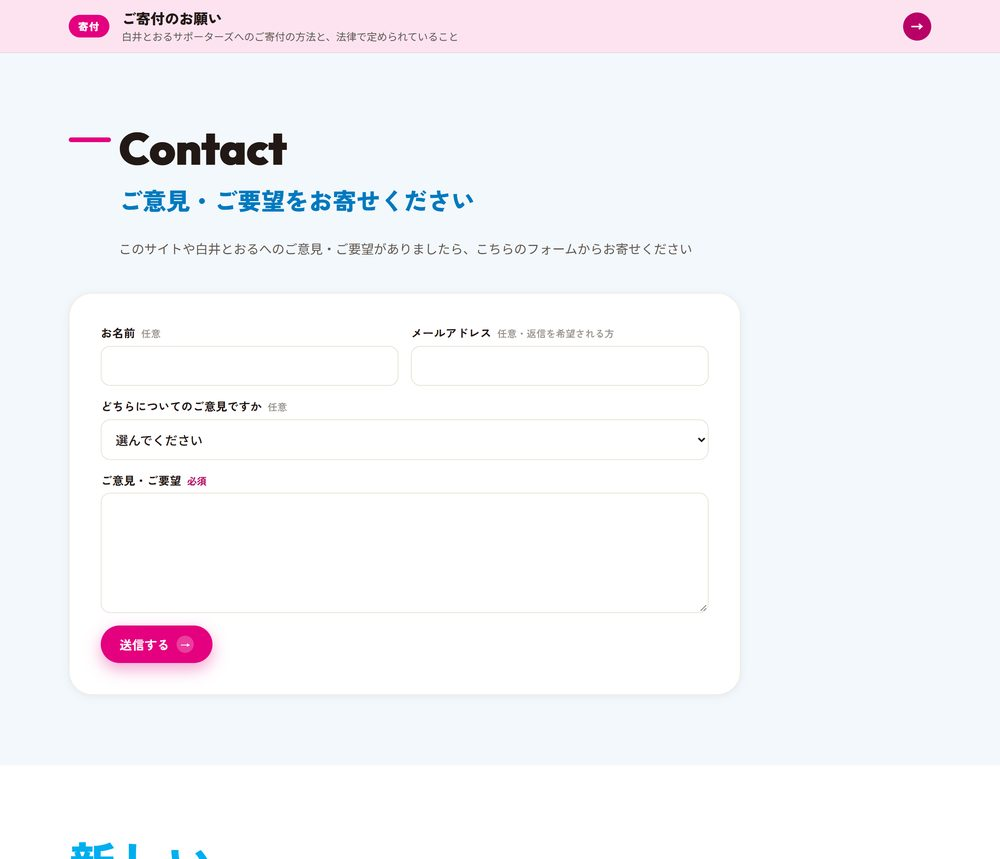
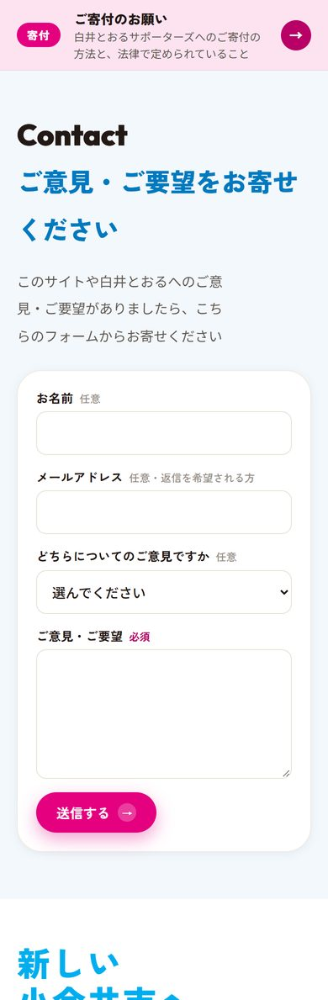
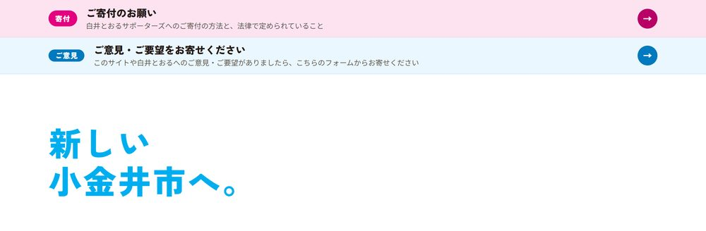
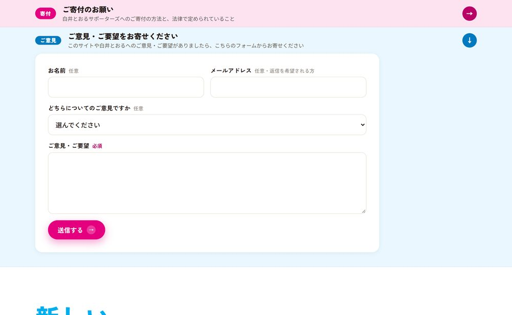
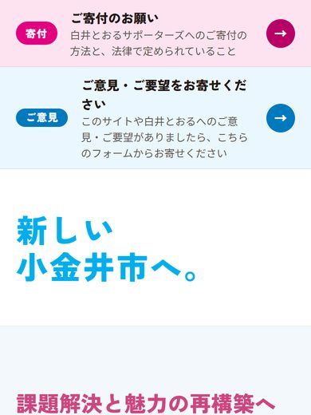
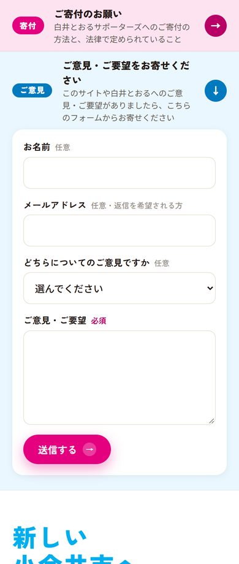
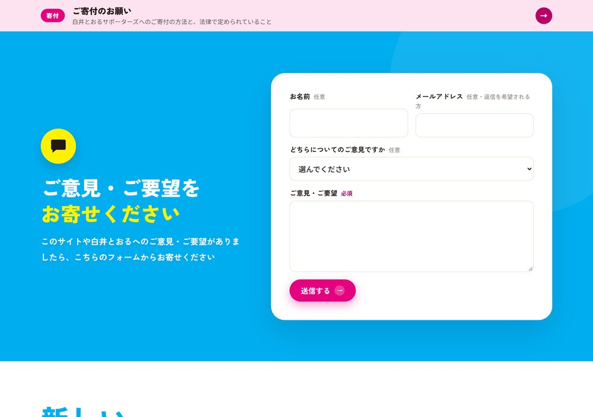
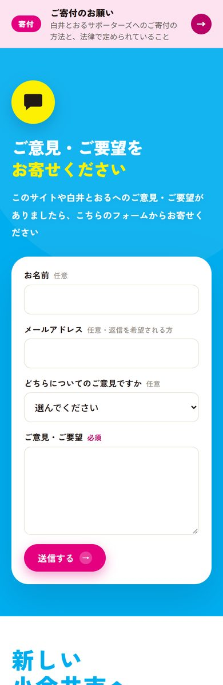

ご意見・ご要望の欄とフォーム 3案（見本）
トップページの「寄付の帯」と「新しい小金井市へ。」の間に入れる案です。いまの本番（22ca515）の上に足した見本で、本番には何も入っていません。
3案とも、本人指定の1文
「このサイトや白井とおるへのご意見・ご要望がありましたら、こちらのフォームからお寄せください」
をそのまま入れています。フォームの項目は共通: お名前（任意）／メールアドレス（任意・返信を希望される方）／どちらについてのご意見か（任意）／ご意見・ご要望（必須）。見本なので送信はされません（押すと「見本のため送信されません」と出ます。送り先は未定）。
寄付の帯の次が、すぐ「新しい小金井市へ。」。ご意見の窓口はない。

PC（1280px）
スマホ（390px）既存の欄と同じ様式（Contact／ご意見・ご要望をお寄せください）の欄を新設。1文の下に、フォームをいつも開いたまま置く。
- いちばん素直で分かりやすい。入力欄がすぐ見える
- ページが約1画面ぶん長くなる（PC 約1000px・スマホ 約1000px）

PC（1280px）
スマホ（390px）寄付の帯と同じ形の細い帯（青）。押すと、その場でフォームが開く。閉じているときは約70px。
- ページがほとんど長くならない。寄付の帯と並んで統一感が出る
- 「ご意見」の存在は控えめ。開くまでフォームは見えない

PC・閉じた状態
PC（1280px）（開いた状態）
スマホ・閉じた状態
スマホ（390px）（開いた状態）ヒーローと同じ青の大きなパネル。左に黄色い吹き出しの印とことば、右に白いフォームカード。
- いちばん目に留まり、「声を聞く」姿勢が伝わる
- いちばん長い（PC 約780px・スマホ 約1200px）。寄付の帯の直後に青が来るので、押しの強い印象

PC（1280px）
スマホ（390px）